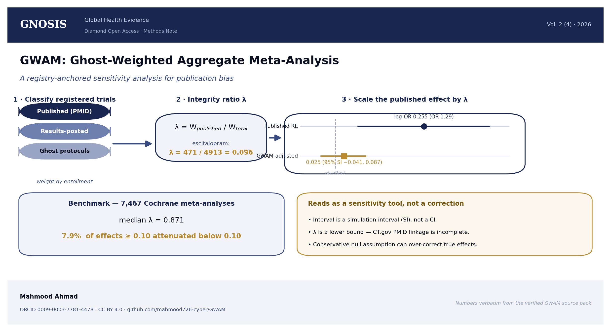
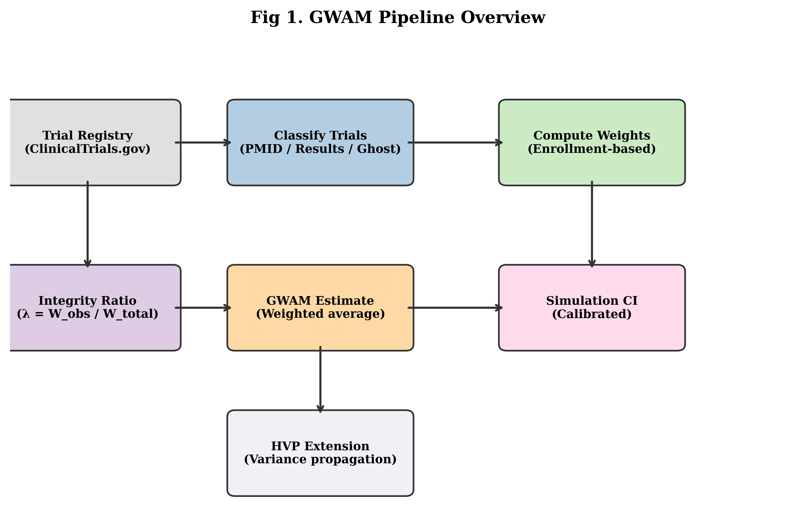

Background. Publication bias threatens the validity of meta-analysis, yet routine detection tools (funnel-plot asymmetry, trim-and-fill) rest on assumptions that are hard to verify. Trial registries offer an external anchor for how much of the evidence base is actually visible.
Methods. GWAM (Ghost-Weighted Aggregate Meta-Analysis) is a registry-anchored sensitivity method. It classifies ClinicalTrials.gov records as ghost (completed, with no publication and no posted results), results-posted, or published (PMID-linked); computes an enrollment-weighted integrity ratio λ (the published-participant fraction); and scales the published pooled effect by λ. A Monte-Carlo layer and a hierarchical variance-propagation extension carry the uncertainty about unobserved trials.
Results. For escitalopram in depression (18 trials) λ was 0.096; the GWAM-adjusted log-odds-ratio was 0.025 (95% SI −0.041 to 0.087; SI denotes a simulation interval, not a confidence interval) versus a published random-effects log-odds-ratio of 0.255 (OR 1.29). Across a benchmark of 7,467 meta-analyses from 398 Cochrane reviews the median λ was 0.871, and 7.9% of meta-analyses with a random-effects estimate of magnitude at least 0.10 were attenuated below 0.10. For pregabalin (35 trials, log-risk-ratio) λ was 0.014, flagged as likely incomplete PMID linkage. In simulation (2,000 replications) bias was minimal at μ=0 but grew negative for μ>0 (−0.162 at μ=0.2) and raw coverage fell to 7.1%; the hierarchical extension restored near-nominal coverage.
Conclusions. GWAM is a transparent, reproducible registry-anchored sensitivity analysis, best interpreted as a conservative framework that complements existing publication-bias methods; its performance depends on the quality of ClinicalTrials.gov publication linkage.

| Panel | Stratum / drug–condition | n | λ | Published effect (log scale) | GWAM result |
|---|---|---|---|---|---|
| Applications | Escitalopram / depression | 18 trials | 0.096 | 0.255 (OR 1.29) | 0.025 (95% SI −0.041, 0.087) |
| Applications | Pregabalin / neuropathic pain | 35 trials | 0.014 | 0.916 (RR 2.50) | 0.013 (95% SI −0.029, 0.058) |
| Benchmark (overall) | All Cochrane meta-analyses | 7,467 | 0.871 (median) | median |Δ| 0.055 | 7.9% attenuated <0.10 (95% CI 5.1–11.0) |
| Benchmark by λ̂ source | Exact NCT linkage | 1,438 | 0.950 | — | 3.1% attenuated <0.10 |
| Benchmark by λ̂ source | CT.gov query linkage | 5,569 | 0.861 | — | 9.1% attenuated <0.10 |
| Benchmark by λ̂ source | Transport proxy | 86 | 0.950 | — | 10.5% attenuated <0.10 |
| Benchmark by λ̂ source | Default (0.70) | 374 | 0.700 | — | 8.3% attenuated <0.10 |
| Benchmark by study count | k = 2 | 2,895 | 0.894 | — | 6.3% attenuated <0.10 |
| Benchmark by study count | k = 3 | 1,409 | 0.880 | — | 7.9% attenuated <0.10 |
| Benchmark by study count | k ≥ 4 | 3,163 | 0.845 | — | 9.4% attenuated <0.10 |